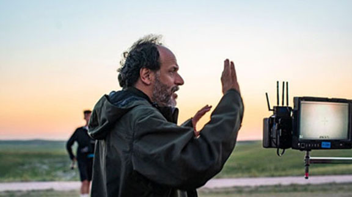
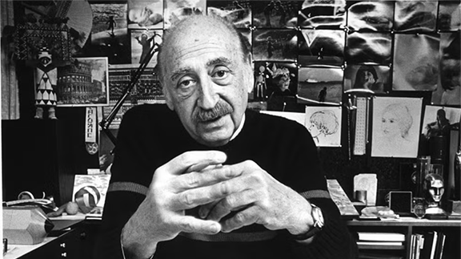

Yannis Drakoulidis / Metro Goldwyn Mayer Pictures
He is an Italian director, screenwriter, and producer. He is best known for his work on the films "Call Me by Your Name" and "Challengers" Guadagnino’s passion and dedication to storytelling is told in these details. It inspires me to think beyond basic creativity, it teaches me to include design in every layer.. Even in layers I wouldn’t think to.

Tony Barnard - Getty Images
He is an American graphic designer and film editor. He is best known for his work on the logos and opening sequences of films such as "Vertigo" and "North by Northwest". His work changed graphic design forever, and his timeless designs continue to inspire me to this day.
Scott Legato - Getty Images
He is an American country singer and songwriter. He is best known for his personal and vulnerable songwriting style in the country music genre. His music inspires me to always feel deeply not only in my personal life but also in whatever I create because it brings out something raw, real, and vulnerable.